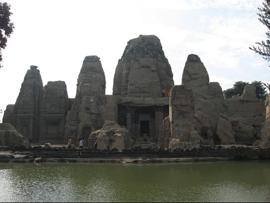
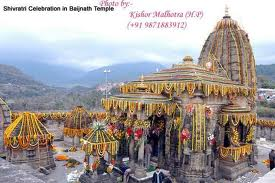
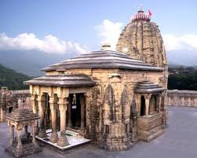
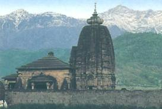
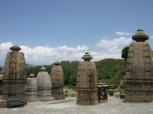
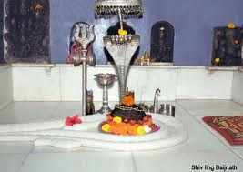
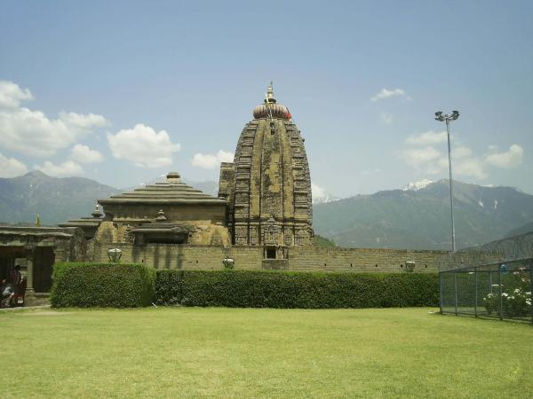
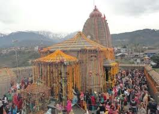

WELCOME TO
KANGRA VALLEY
INTRODUCTION
Baijnath is a town in Kangra district of Himachal Pradesh. It is about 50 kilometres from Dharamshala which is the district headquarters.The very famous ancient temple of Lord Shiva (Baijnath) is situated here which is believed to be one of twelve jyotirlingas according to popular legends also giving the town its name .

GEOGRAPHY
Baijnath is located at 32.05°N 76.65°E. It has an average elevation of 1,314 metres (4,311 feet). It is a small township in the Dhauladhar range of western Himalayas, 16 km from Palampur in the Kangra District of Himachal Pradesh.
HISTORY
Baijnath is famous for its 13th century temple dedicated to Shiva as Vaidyanath, ‘the Lord of physicians’. Originally known as Kiragrama, the town lies on the Pathankot-Mandi highway (National Highway No. 20) almost midway between Kangra and Mandi.
read more
BAIJNATH TEMPLE
The main attraction of Baijnath is an ancient temple of Shiva. Neighbouring towns are Palampur Kangra and Joginder Nagar in Mandi district. According to the legend, it is believed that during the Treta Yug, Ravana in order to have invincible powers worshiped Lord Shiva in the Kailash.
read more
TOURISM
Besides the main temple there are several other shrines which are of equal importance for the local residents. Some of them are Mukut Nath temple at Sansal (6 km)and the Mahankal Temple on Chobin Road.
read more